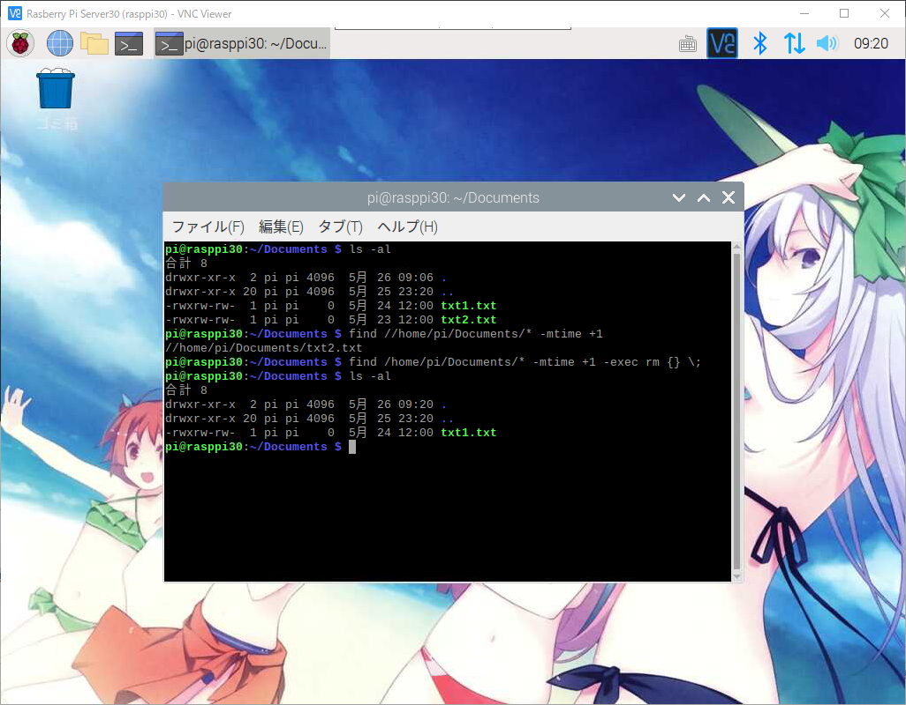

라즈베리파이 또는 리눅스 find 명령어로 오래된 파일 삭제하기
라즈베리파이 또는 리눅스 find 명령어로 오래된 파일 삭제하기
라즈베리파이 또는 리눅스 서버를 운영하다보면 일정시간이 지나면
불필요한 파일이나 로그파일을 삭제하고싶지만 자동으로 하는방법을 설명해 드리겠습니다.
일정 시간이 지난 파일을 찾는 방법 : find 명령어
find명령어에 여러가지 옵션이 많이 있습니다만 일단 파일삭제에 필요한 옵션만 이용해 보도록 하겠습니다.
1 | $ find 명령어를 통해 변경된지 하루가 넘은 파일을 찾기 위해서는 다음과 같이 옵션이 주어져야 합니다. |
다음과 같이 리스트 파일을 출력해 보신후 파일이 존재한다고 가정했을때
1 | -rwxrw-rw- 1 pi pi 0 5月 24 12:00 txt1.txt |
현재 날짜가 5월 26일 이라고 하면..
txt1.txt파일은 약1일 전에 만들어진 파일 입니다.
txt2.txt파일은 2일 전에 만들어진 파일 입니다.
1 | $ find /home/pi/Documents/* -mtime +1 명령어를 통해서 txt2.txt가 검색이 됩니다. |
1 | -mtime은 수정된 시간을 기준으로 합니다. |
일정 시간이 지난 파일을 지우는 방법 : find + exec + rm명령어
일정 시간이 지난 파일을 찾아서 지우는것도 역시 find 명령어를 사용하는데요.
이번에는 exec라는 옵션을 사용하면 됩니다.
1 | $ find /home/pi/Documents/* -mtime +1 -exec rm {} \; |
txt2.txt 파일이 삭제된것을 확인 하실수 있습니다.

PHP공식사이트